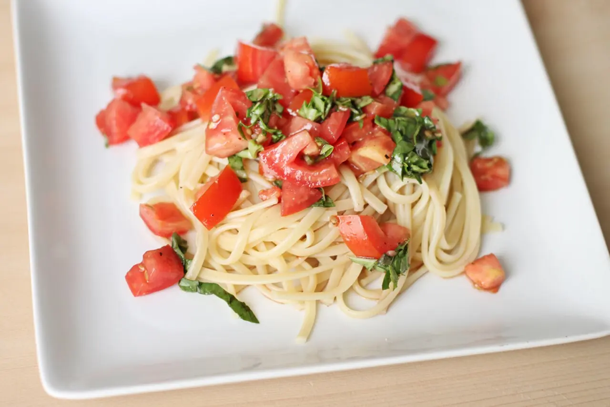

토마토 바질 파스타가 집에서 밋밋해지는 이유는 대개 재료가 부족해서가 아닙니다. 토마토를 너무 빨리 끓여 신맛만 남기거나, 면수를 버린 뒤 물기 없는 소스에 면을 비비거나, 바질을 오래 익혀 향을 날려 보내기 때문입니다. 이 요리는 화려한 조리기구보다 순서가 더 중요합니다. 토마토를 살짝 눌러 단맛을 꺼내고, 짭짤한 면수를 조금 남겨 소스의 농도를 맞추고, 마지막 1분 동안 팬 안에서 면과 소스를 흔들어 주면 집에서도 충분히 깊은 맛이 납니다.
2인분 기준 재료는 아래처럼 준비합니다. 파르메산 치즈가 있으면 마지막에 조금 갈아 넣어도 좋지만, 없어도 괜찮습니다. 중요한 것은 토마토와 면수, 기름이 서로 따로 놀지 않게 만드는 일입니다.
| 구분 | 재료 | 분량 | 준비 기준 |
|---|---|---|---|
| 면 | 스파게티 | 180g | 포장 시간보다 1분 짧게 삶을 수 있는 굵기로 준비합니다. |
| 소스 | 잘 익은 토마토 또는 홀토마토 | 토마토 2개 또는 홀토마토 1컵 | 생토마토는 큼직하게 썰고, 홀토마토는 거칠게 으깹니다. |
| 향 | 마늘 | 3쪽 | 얇게 썰어 기름에 향을 옮깁니다. |
| 유화 | 올리브오일 | 3큰술 | 처음 향을 내고 마지막에 윤기를 더할 만큼 나눠 씁니다. |
| 마무리 | 바질 | 한 줌 | 불을 끈 뒤 손으로 찢어 잔열에 섞습니다. |
| 간 | 소금, 후추 | 적당량 | 삶는 물과 마지막 간을 나누어 맞춥니다. |
토마토는 언제 눌러야 하나

팬을 중약불에 올리고 올리브오일을 넉넉히 두른 뒤 얇게 썬 마늘을 넣습니다. 마늘은 갈색이 될 때까지 튀기는 것이 아니라 기름에 향을 옮긴다는 느낌으로 익힙니다. 가장자리가 아주 옅은 금색으로 바뀌면 토마토를 넣을 차례입니다. 생토마토를 쓸 때는 꼭지를 도려내고 큼직하게 썰어 넣으면 되고, 껍질이 거슬리면 십자로 칼집을 낸 뒤 뜨거운 물에 잠깐 담갔다 벗겨도 됩니다. 홀토마토를 쓸 때는 손이나 주걱으로 거칠게 으깨 넣습니다.
토마토를 넣자마자 세게 끓이면 수분이 빠르게 날아가면서 신맛이 먼저 올라옵니다. 처음 2분은 중약불에서 토마토가 스스로 주스를 내도록 기다립니다. 그다음 주걱으로 큰 덩어리만 눌러 줍니다. 이때 설탕을 바로 넣고 싶어질 수 있지만, 먼저 소금 한 꼬집으로 토마토의 단맛을 끌어내는 편이 좋습니다. 토마토가 너무 새콤하면 마지막에 설탕을 아주 조금 더하는 것이 낫습니다.
소스는 완전히 되직하게 만들 필요가 없습니다. 면이 들어오면 면수와 전분이 농도를 다시 잡아 주기 때문입니다. 팬 바닥에 토마토 주스가 얇게 깔리고, 기름이 표면에 둥둥 떠 있기보다 붉은색으로 조금씩 섞이기 시작하면 다음 단계로 넘어갈 수 있습니다.
면수는 얼마나 남기나
파스타 물은 넉넉하게 끓이고 소금은 물맛이 살짝 짭짤하게 느껴질 정도로 넣습니다. 면이 소스 안에서 간을 다시 맞추기 때문에 삶는 물이 너무 싱거우면 전체 맛이 흐려집니다. 포장지의 권장 시간보다 1분 정도 짧게 삶는 것이 좋습니다. 마지막 1분은 팬에서 소스와 함께 익혀야 면 겉면에 맛이 붙습니다.
면을 건지기 전에 반드시 면수를 한 컵 정도 따로 남깁니다. 이 면수는 단순한 물이 아니라 전분과 소금이 들어 있는 조리 재료입니다. 토마토 소스가 너무 되직할 때 풀어 주고, 올리브오일과 토마토 주스를 붙이는 접착제 역할을 합니다. 한꺼번에 붓지 말고 처음에는 4큰술 정도만 넣습니다. 팬을 흔들어 보아 면이 부드럽게 움직이면 충분하고, 팬 바닥이 말라 붙으면 조금 더 넣습니다.
면을 체에 밭쳐 오래 두면 표면 전분이 마르면서 소스가 덜 붙습니다. 가능하면 집게로 바로 팬에 옮기는 편이 좋습니다. 물기가 조금 따라 들어가도 괜찮습니다. 오히려 그 수분이 팬 안에서 유화를 돕습니다. 단, 면을 찬물에 헹구면 안 됩니다. 온도와 전분이 함께 사라져 소스와 면이 따로 놀기 쉽습니다.
팬에서 언제 섞나
면이 팬에 들어간 뒤부터가 이 요리의 핵심입니다. 불은 중불로 올리고 집게로 면을 들어 올렸다 내려놓으며 토마토 소스가 면 사이로 들어가게 합니다. 팬을 앞뒤로 살짝 흔들고, 면수를 한 숟가락씩 더하면서 소스가 면을 얇게 감싸는지 봅니다. 처음에는 소스가 묽어 보여도 30초 정도 지나면 전분이 풀리며 농도가 잡힙니다.
올리브오일을 처음에만 넣고 끝내면 향은 좋지만 윤기는 부족할 수 있습니다. 면이 거의 익었을 때 올리브오일을 반 큰술 정도 더 두르고 팬을 흔들면 토마토의 산미가 부드러워집니다. 이때 팬 바닥에 물처럼 남아 있던 소스가 면에 착 붙어야 합니다. 접시에 담았을 때 붉은 물이 흥건하게 고이면 면수가 많았던 것이고, 면이 뻑뻑하게 뭉치면 면수가 부족했던 것입니다.
간은 마지막에 다시 봅니다. 토마토 소스만 먹었을 때 맞는 간과 면까지 함께 먹었을 때 맞는 간은 다릅니다. 면 한 가닥을 집어 먹고 싱거우면 소금보다 치즈나 면수의 농도를 먼저 생각합니다. 소금을 바로 많이 넣으면 토마토의 향보다 짠맛이 먼저 남을 수 있습니다.
마지막 향은 어떻게 살리나
바질은 불 위에서 오래 익히지 않습니다. 잎이 큰 것은 손으로 찢어 향을 살리고, 불을 끈 뒤 팬에 넣어 잔열로만 숨을 죽입니다. 칼로 잘게 다지면 향이 빨리 날아가고 단면이 검게 변하기 쉽습니다. 후추도 마지막에 갈아 넣으면 향이 선명합니다. 치즈를 넣는다면 접시에 담은 뒤 아주 조금만 올립니다. 토마토와 바질을 먹는 요리이므로 치즈가 주인공이 되지 않게 합니다.
접시는 가능하면 따뜻하게 데워 두면 좋습니다. 얇은 토마토 소스는 차가운 접시에 닿으면 금방 식고 맛이 둔해집니다. 남은 파스타는 다음 끼니에 전자레인지로만 데우면 기름과 수분이 분리되기 쉽습니다. 팬에 물이나 면수를 2큰술 정도 넣고 약불에서 천천히 풀어 주면 처음 질감에 조금 더 가깝게 돌아옵니다.
이 파스타를 손님상에 낼 때는 면을 완전히 접시에 쌓아 올리기보다 집게로 한 번 말아 중심을 잡고, 남은 소스를 위가 아니라 가장자리에 살짝 둘러 줍니다. 그러면 처음 젓가락이나 포크가 들어갈 때 면이 지나치게 무너지지 않습니다. 바질은 접시 위에 올린 뒤 손바닥으로 가볍게 쳐 향을 깨우면 더 선명합니다. 고소함을 더하고 싶다면 마른 팬에 빵가루를 아주 살짝 볶아 뿌려도 좋습니다. 단, 빵가루를 많이 올리면 토마토의 산뜻함이 가려지므로 한 숟가락을 넘기지 않는 편이 좋습니다.
토마토 바질 파스타는 재료가 단순해서 실수가 더 잘 보입니다. 그러나 그만큼 다시 만들 때 고칠 지점도 분명합니다. 신맛이 강하면 토마토를 더 기다리고, 싱거우면 삶는 물의 간을 올리고, 소스가 따로 놀면 팬에서 흔드는 시간을 늘리면 됩니다. 면수 한 컵을 남겨 두는 습관만 생겨도 이 파스타는 집밥의 단골 메뉴가 될 만큼 안정적으로 깊어집니다.